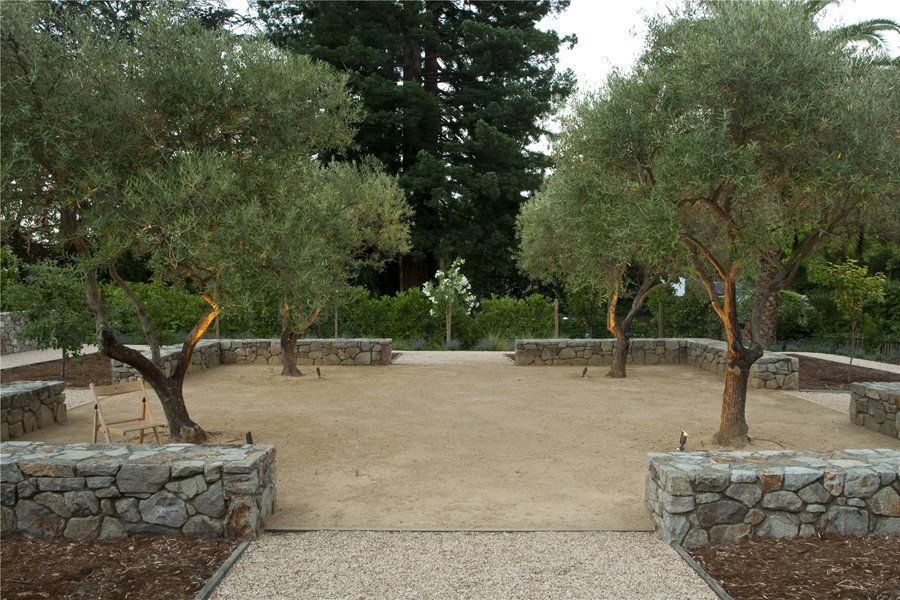

<!DOCTYPE html>
<html>
    <head>
        <meta charset="utf-8">
        <meta http-equiv="X-UA-Compatible" content="IE=edge">
        <title></title>
        <meta name="description" content="">
        <meta name="viewport" content="width=device-width, initial-scale=1">
        <link rel="stylesheet" href="css/piCrop.css">
    </head>
    <body>

        <div class="my_ImageCropper">

            <div class="Cropper_Wrappe_Holder">
                <div class="Cropper_Wrapper">
                    <div class="Cropping_IMG">
                        
                        <!--  -->
                        <!--  -->
                        <!--  -->
                    </div>
                </div>
                <div class="item">
                    <div class="resizer ne"></div>
                    <div class="resizer nw"></div>
                    <div class="resizer sw"></div>
                    <div class="resizer se"></div>
                    <!-- <div class="resizer reColor n"></div>
                    <div class="resizer reColor s"></div>
                    <div class="resizer reColor w"></div>
                    <div class="resizer reColor e"></div> -->
                </div>
            </div>
            
        </div>

        <script type="module" src="js/Imge_tuch.js" async defer></script>
        <script type="module" src="js/piCrop_script.js" async defer></script>
    </body>
</html>